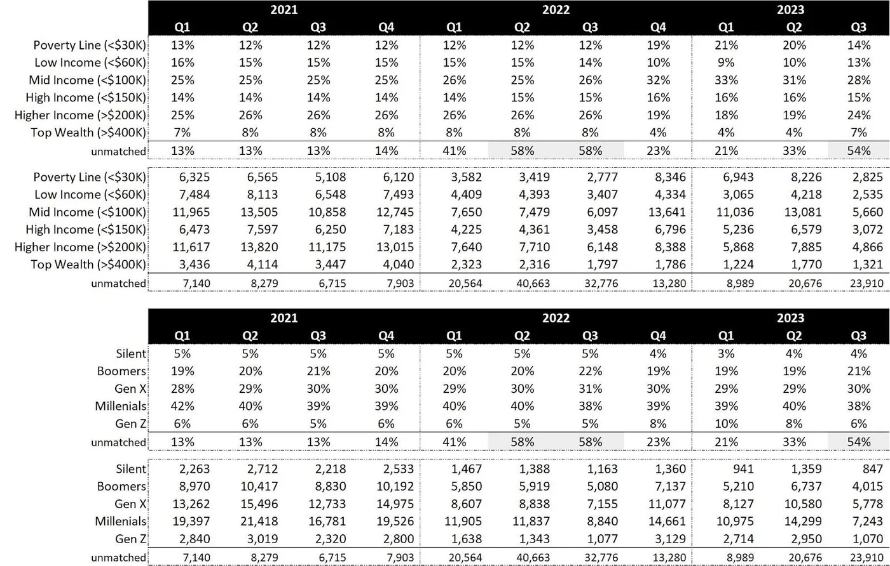
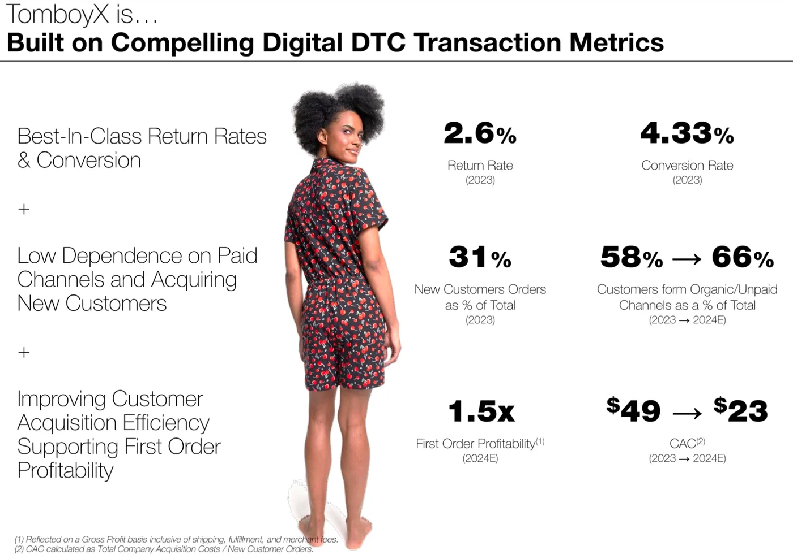
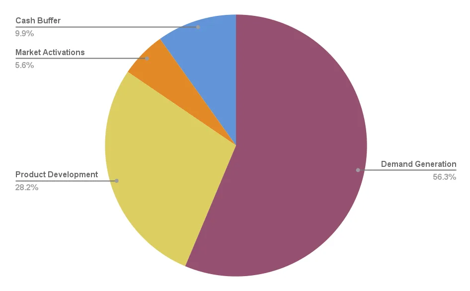
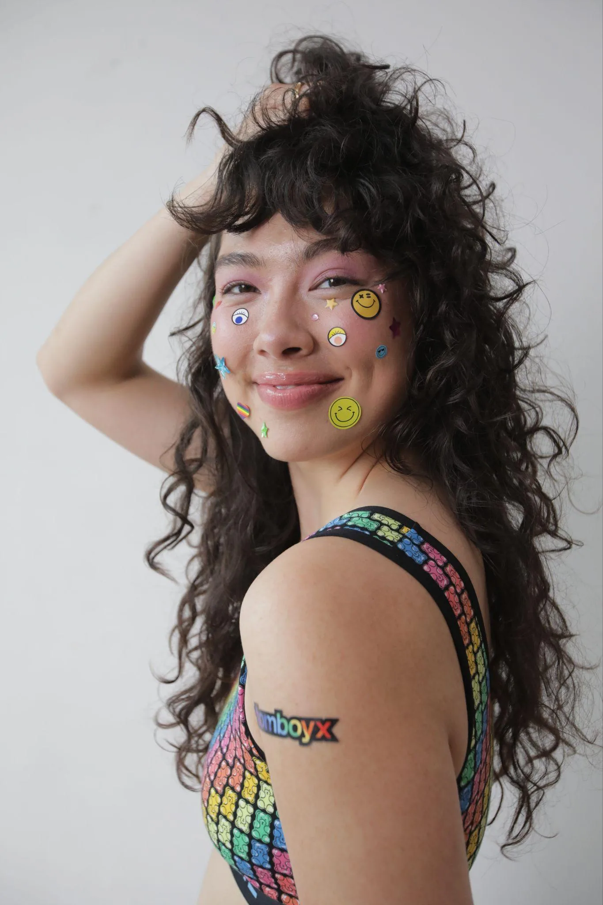

Beloved underwear company in need of a refreshed story to raise a re-capitalization in a down round.
Three decks
Three audiences
United States10–20 employees$22M+ annual revenue
One company. Three decks. We wrote the same story for the operator who reads a P&L, the believer who funds values, and the syndicate who forwards to LPs.
pick an audience →
what we built ↓
the operator deckthe believer deckthe syndicate deckthe close
Three decks. Three audiences. Same Tomboy. Flip between them below.
Three audience framings below — enable JavaScript for the toggle.
beat 01 — how each deck opened
How each deck opened.
for the operator
Operators read an opener like a P&L header. We led with the category-leader claim — first to launch boxer briefs for women — then stacked concrete numbers: 76 NPS, 55,000+ five-star reviews, one-third of units in extended sizes. The pitch was: this isn't a turnaround. It's a company that's been operating at top-decile metrics the whole time.
from the deck we built · the operator
"Category pioneer. 76 NPS. 55,000 five-star reviews. One-third of units in extended sizes."
for the believer
Believers need to feel the company before they can fund it. We moved the customer quotes from appendix-candy to slide 3 — so the first thing the investor saw after "who we are" was what it meant to be seen. Then the B-Corp badge and the timeline, to prove the feeling was backed by a decade of scrappy execution.

from the deck we built · the believer
"I didn't expect to cry when I put them on — but I did."
for the syndicate
The syndicate deck had to work without a voice next to it. We opened with a title that was the pitch ("All up in our undies" — no business-as-usual, we're being real) and a single-sentence identity: queer-owned, women-founded, every body. If an LP scrolled past just the cover, that one line did the job. No math yet; the promise first.
from the deck we built · the syndicate
"Queer owned, women founded. Premium basics for every body."
beat 02 — how each deck handled the numbers
How each deck handled the numbers.
for the operator
Operators want the comparison. Every row on the KPI table had a market benchmark to the left and TomboyX to the right — so the investor's eye did its own math. Return rates 2.5% vs 30% market. NPS 76 vs 36. CAC $23 vs $45. A 50% repeat rate on half the brand spend. That's the unit-economics story an operator moves on.

from the deck we built · the operator
"76 NPS. 2.5% returns. $23 CAC. 50% repeat rate on half the brand spend."
for the believer
Believers needed permission to believe. We put the same numbers in the middle of the deck — after the community had been established, before the team. The framing language ("despite running with a very lean, cash-focused team") invited the investor to read every metric as proof the team delivered under constraint. Same table, warmer wrap.
from the deck we built · the believer
"Top-decile metrics, on a cash-starved team. Imagine what they'd do funded."
for the syndicate
Syndicates forward slides to LPs. A single KPI table is too much to skim on a phone. We split it across two slides with separate takeaways — so a partner could screenshot either slide and have a standalone argument. The first slide handled efficiency (return rates, margins, conversion, brand spend). The second handled loyalty (NPS, CAC, repeat rate). Both lived or died alone.
from the deck we built · the syndicate
"One table, two slides. Because LPs skim in screenshots."
beat 03 — how each deck framed the broken years
How each deck framed the broken years.
for the operator
Operators respect a diagnosis. We laid the issues down flat — no softening — and paired each one with its solution on the same slide. Four named problems: misalignment between ownership and management, crushing debt and lack of working capital, CPG playbook from majority owners, distractions from inconsistent board priorities. Four solutions, already started. Reading left-to-right, the investor could see every scar and every patch in one breath.

from the deck we built · the operator
"Four broken things. Four fixes, already started."
for the believer
Believers don't want a postmortem. We softened the diagnosis into redemption — each issue followed by "SOLVED by..." in plain type. The tone said: yes, it was hard, it's behind us, we're a company with a soul that got institutionalized and is walking back. The structure was the same as the operator slide; the voice was warmer by about 15 degrees.

from the deck we built · the believer
"Getting out of a bad couple years. Every one of them, SOLVED."
for the syndicate
Syndicates need the awkward answer on the page — there's no founder in the room to soften it. We moved the "broken years" slide up before the market context and put the plain valuation rationale directly on the ask slide: revenues stagnated, ownership needs to change. No hedging. LPs trust a deck that owns its own weaknesses before they can ask.
from the deck we built · the syndicate
"Why the $3M valuation? Because the ownership has to change. We said it first."
beat 04 — how each deck asked for money
How each deck asked for money.
for the operator
Operators want the math, the allocation, and the sequenced plan. We put all three on the ask: $3M at $3M pre (50% stake, clean), over 40% already committed, and a pie chart showing 56.3% of the raise goes to demand gen — the thing that actually unblocks growth. The 3-horizon roadmap mapped the first 6 months onto concrete unlocks: debt, CEO, cash. The close wasn't a story. It was a sequence.
from the deck we built · the operator
"$3M at $3M pre. 40% committed. 56% of the raise goes to demand gen."
for the believer
Believers close with a moral question, not a term sheet. We put Fran's signed manifesto as the final slide — "we fight for every woman told she's too much or not enough, for every trans person told they don't belong." The valuation math lived on the previous slide, deliberately. The ask wasn't "will you invest." It was "which side are you on."
from the deck we built · the believer
"For every woman told she's too much. For every trans person told they don't belong. Join us."
for the syndicate
Syndicates close with peers. We named six committed participants on the ask slide — Tres Monos Capital, AK Holdings, Matterhorn Enterprises, Tau Investment Management, Gaingels, Fran Dunaway — so an LP reading this knew who else had already written the check. The "$1M remaining" created urgency without pressure. The appendix gave the deck legs after the pitch ended, because LPs always ask two questions: who else is in, and show me the data. We put both in the same deck.
from the deck we built · the syndicate
"Tres Monos. AK Holdings. Matterhorn. Tau. Gaingels. Fran. $1M left."
your move
Got a story that needs this kind of telling? Be our friends.